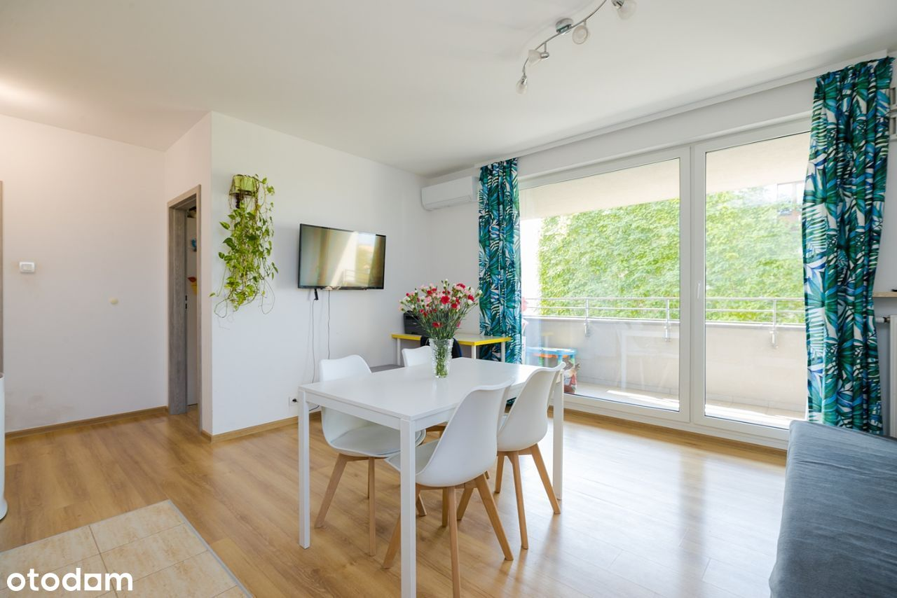
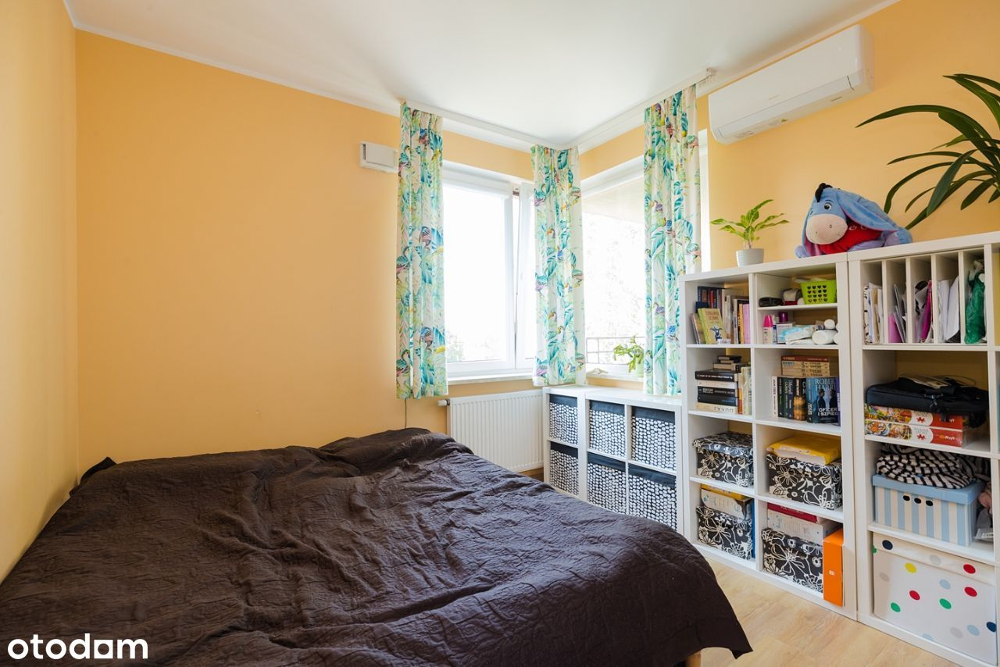

Na sprzedaż w pełni wykończone, ciche 4 pokojowe mieszkanie na Targówku, Osiedle Wilno,
BLOK:
Niski budynek z windą z 2018r. na strzeżonym, bardzo zadbanym, kameralnym, zielonym i bezpiecznym osiedlu.
Mieszkanie znajduje się na 2 piętrze.
MIESZKANIE:
Mieszkanie składa się z salonu z aneksem kuchennym, 3 pokoi, dwóch łazienek, spiżarni oraz balkonu.
Mieszkanie jest w pełni wykończone. Istnieje możliwość przearanżowania pomieszczeń według własnych potrzeb.
Idealne jako mieszkanie dla rodziny.
Dwa niezależne miejsca postojowe w garażu podziemnym - dodatkowo płatne 70 000zł.
LOKALIZACJA:
Osiedle Wilno dzięki własnej stacji kolejowej zapewnia dojazd w ciągu 5 min do II linii metra- Dworzec Wileński.
Bliskość ul. Radzymińskiej i trasy S8 oraz pętla autobusowa, które oferują doskonałą komunikację z innymi częściami Warszawy.
W okolicy działają liczne placówki edukacyjne i medyczne.
Osiedle posiada pełną infrastrukturę usługowo-handlową.
Zapraszam do kontaktu i na prezentację.
Niniejsze ogłoszenie jest wyłącznie informacją i nie stanowi oferty w rozumieniu art. 66 1 Kodeksu Cywilnego.
